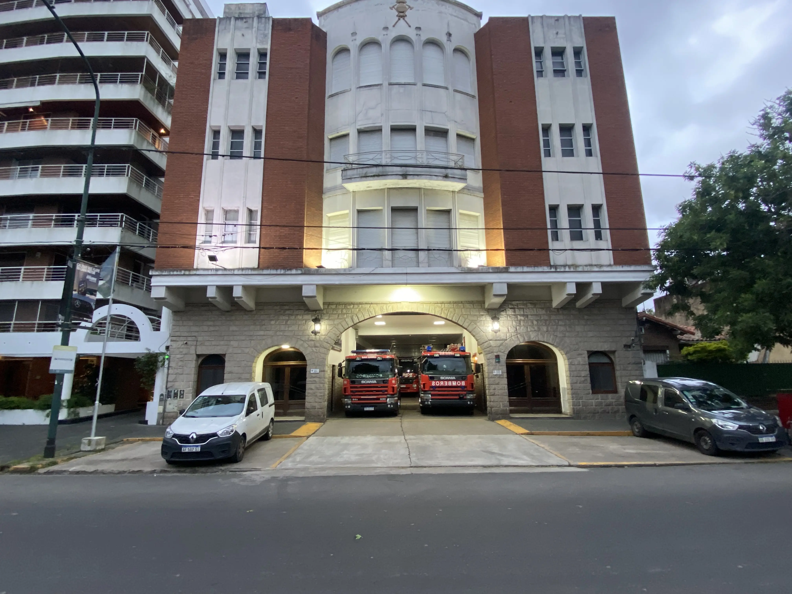

SOCIEDAD DE BOMBEROS VOLUNTARIOS DE SAN ISIDRO
COMISIÓN DIRECTIVA
Compromiso, gestión y acompañamiento institucional al servicio de nuestra comunidad.
La Comisión Directiva constituye el órgano de conducción institucional de la Sociedad de Bomberos Voluntarios de San Isidro.
Su labor está vinculada con la administración, la organización y el acompañamiento de las actividades que permiten el funcionamiento y el desarrollo de nuestra institución.
01 / Conducción institucional
Autoridades
Integrantes responsables de la conducción y administración institucional.
Dr. Horacio Pallarés
02 / Organización administrativa
Secretaría y Tesorería
Cargos que forman parte de la organización administrativa de la institución.
Nombre y apellido
Nombre y apellido
Nombre y apellido
Nombre y apellido
03 / Integrantes
Vocales
Integrantes de la Comisión Directiva que participan en sus actividades y decisiones institucionales.
Nombre y apellido
Nombre y apellido
Nombre y apellido
Nombre y apellido
04 / Control institucional
Revisores de Cuentas
Apartado destinado a presentar a los integrantes del órgano de revisión de cuentas.
Nombre y apellido
Nombre y apellido
Compromiso institucional
Una institución, un mismo compromiso
La gestión institucional y la labor del Cuerpo Activo forman parte de un mismo propósito: sostener el servicio de Bomberos Voluntarios de San Isidro a nuestra comunidad.
Conocé nuestro Cuerpo Activo